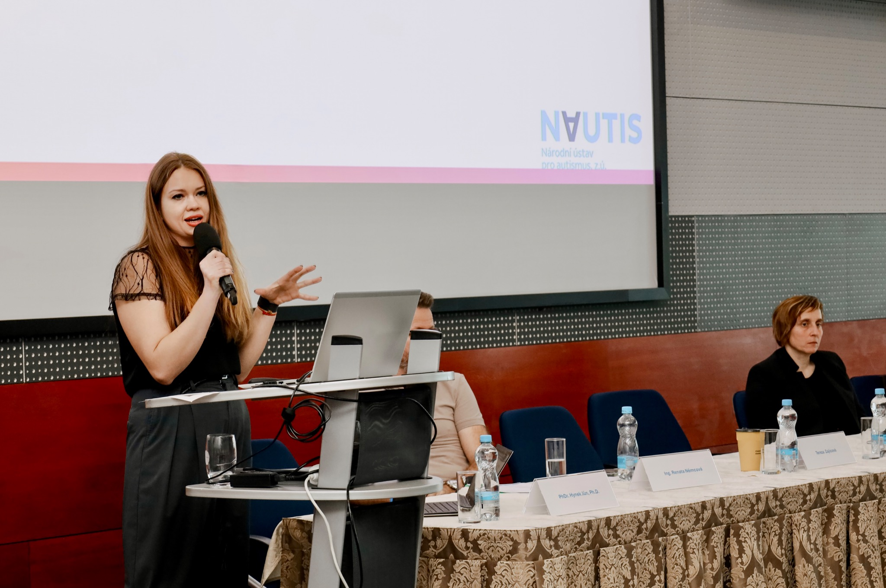

Konference a odborná vystoupení
Sdílení zkušeností z psychoterapeutické praxe, mimo jiné v oblasti autismu a duševního zdraví.
PSYCHOTERAPIE · PRAHA
PSYCHOLOŽKA A PSYCHOTERAPEUTKA
RÁDA VÁS POZNÁM
Jsem psycholožka a psychoterapeutka působící v Praze. Ve své práci propojuji individuální psychoterapii, zkušenosti s neurodiverzitou a zájem o vztahy, intimitu a lidskou zkušenost.
Věřím v otevřený dialog, respekt k jedinečnosti každého člověka a terapeutický vztah, ve kterém je místo pro složitost i autenticitu.
Domluvit konzultaci ↗INDIVIDUÁLNÍ PRÁCE
Nabízím individuální psychoterapii a psychologické poradenství dospívajícím a dospělým. Věnuji se mimo jiné vztahům, úzkostem, sebepojetí, životním změnám, autismu a otázkám sexuality.
Kontakt a objednání ↗MIMO TERAPEUTICKOU MÍSTNOST
Vedle psychoterapie se věnuji vzdělávání, odborným vystoupením a projektům podporujícím porozumění duševnímu zdraví.

Sdílení zkušeností z psychoterapeutické praxe, mimo jiné v oblasti autismu a duševního zdraví.
Účast na společné knižní publikaci věnované terapii a vztahu k sobě i druhým.
Otevřený dialog o vztazích, psychoterapii a tématech, která se dotýkají každodenního života.
Práce s dětmi, dospívajícími a rodinami, skupinové programy a rozvoj podpůrných aktivit v oblasti autismu.
ROZHOVORY A ČLÁNKY
V médiích mluvím o vztazích, psychoterapii, sexualitě a duševním zdraví. Vybrané rozhovory a odborné komentáře.
Psychologie, vztahy a intimita
Odborné komentáře a rozhovory
Vztahy a ghosting
Sexualita a bisexualita
Psychologie a každodenní život
ODBORNÉ ZÁZEMÍ
Pražská vysoká škola psychosociálních studií. Diplomová práce zaměřená na agresi v konsenzuálních BDSM aktivitách.
Komplexní psychoterapeutický výcvik se sebezkušenostní, teoretickou a supervizní složkou.
Psychologická a psychoterapeutická práce s lidmi na autistickém spektru, individuální konzultace, skupiny a práce s rodinami.
Předchozí odborná praxe v oblasti sexuologie.
Individuální psychoterapie a psychologické poradenství v Praze.
PROFESNÍ ČLENSTVÍ A SPOLUPRÁCE
Jsem řádnou členkou České asociace pro psychoterapii.
Spolupracuji se zdravotními pojišťovnami v rámci jejich preventivních programů na podporu duševního zdraví.
PRVNÍ KROK
Pro dotazy ohledně psychoterapie, spolupráce nebo odborných vystoupení mě můžete kontaktovat e-mailem.
info@psycho-daria.cz ↗Praha · osobně a online dle domluvy